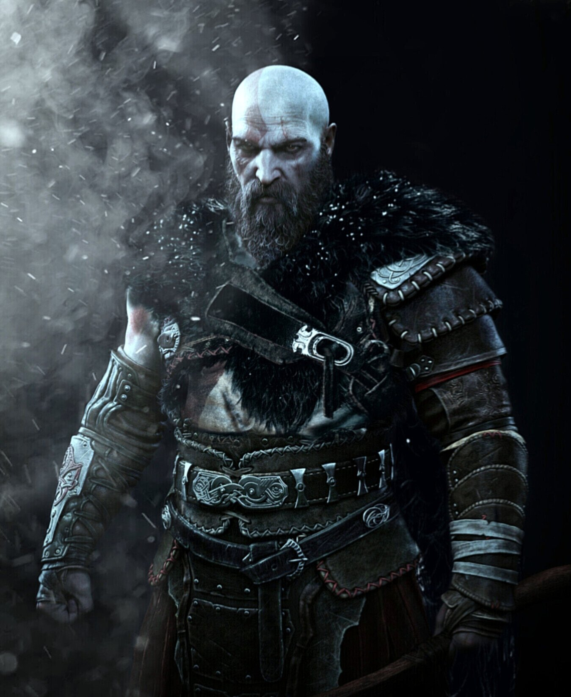
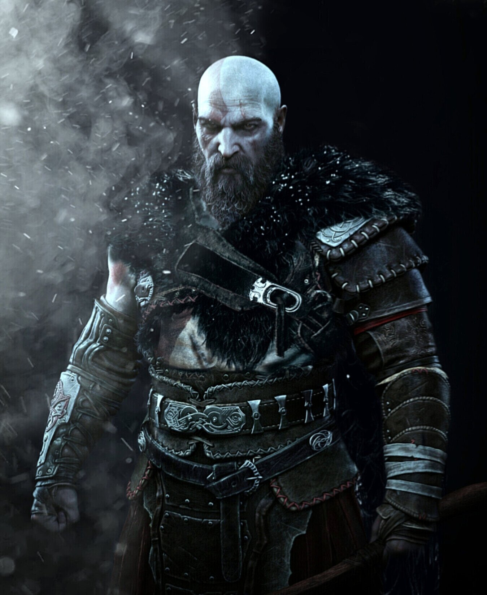

Personagens
Confira os principais personagens de God of War Ragnarok
Kratos
Como muitos já sabem, Kratos é o protagonista da franquia God of War e repete o papel de personagem jogável.
Em Ragnarok, o deus da guerra continua aprofundando o relacionamento com o filho, Atreus, tentando impedi-lo de cometer os mesmos erros do seu passado. Vale ressaltar que Kratos terá tanto o Machado Leviatã, quanto a Lâmina do Caos desde o início da história.
Christopher Judge retorna como a voz original do espartano, enquanto Ricardo Juarez dubla o personagem na versão em português brasileiro.
 

Atreus
Atreus é filho de Kratos e Faye, uma Gigante da raça Jotun, e está em busca de entender quem ele é e o que a linhagem da mãe significa para seu futuro. Mais uma vez, ele será um personagem companheiro no novo jogo, oferecendo flechas e invocações mágicas como ajuda no combate. Assim como Judge, o ator Sunny Suljic retorna como a voz original de Atreus. E Lipe Volpato dubla o garoto na versão brasileira.


Mimir
Mimir é o homem mais inteligente dos Nove Reinos e continua oferecendo conhecimento e informações para Kratos e Atreus enquanto é carinhosamente carregado no cinto do espartano. Alastair Duncan retorna como voz original do personagem, e o brasileiro Milton Levy é responsável pela dublagem nacional.
Thor
Um dos personagens inéditos e mais esperados pelos fãs, Thor é o deus do trovão e filho de Odin, sendo responsável pelo quase extermínio dos Gigantes nos Nove Reinos. Com o poderoso martelo Mjölnir, ele será um dos principais vilões da história por estar em busca de vingança contra Kratos pela morte de seus filhos, Magni e Modi. O ator Ryan Hurst, da série Sons of Anarchy, faz a voz original de Thor. Enquanto Gabriel Noya é responsável pela dublagem em português brasileiro.
Freya
Ao lado de Thor, Freya é a outra vilã de Ragnarok. Ela foi introduzida no primeiro jogo e teve um papel importante na trama. Agora, a personagem está em busca de vingança contra Kratos pela morte de Baldur, seu filho. Ela é uma guerreira que sabe lutar e usar a arte da magia dos Vanir, um clã de deuses poderosos. Danielle Bisutti retorna como a voz original de Freya, e Beatriz Villa dubla a deusa na versão brasileira.
Angrboda
Angrboda é uma jovem da raça Jotun, ou seja, é uma das poucas Gigantes que ainda estão vivas. Em Ragnarok, ela será um interesse amoroso de Atreus. A atriz Laya de Leon Hayes, de A Casa de Raven, será a voz original da garota. No entanto, ainda não foi revelado um nome para a dublagem em português.
Týr
Týr é o deus da guerra da mitologia nórdica e filho de Odin. Ao contrário da sua família, ele não apoiou o extermínio dos Gigantes e tentou firmar um selo de paz com o clã Jotun. No entanto, acabou sendo aprisionado pelo próprio pai. Ainda não se sabe o papel do personagem na história, mas o primeiro trailer já mostrou um encontro do deus com Kratos e Atreus. Será que uma possível aliança vem aí? O ator Ben Prendergast, da série animada Star Wars: A Resistência, será a voz original do personagem. Um nome para a dublagem nacional ainda não foi revelado.
Brok
Brok é um dos anões ferreiros, que se tornaram mestres na arte de criação de equipamentos de metal. Foi um dos responsáveis por forjar o Machado Leviatã, de Kratos, e a Mjölnir, o temido martelo de Thor. Seu papel deve ser o mesmo do jogo de 2018, oferecendo atualizações e itens para Kratos e Atreus. Além de servir como um bom alívio cômico para a história. O personagem conta com a voz original de Robert Craighead. Na dublagem brasileira, Mauro Castro dá voz ao anão.
Sindri
Irmão de Brok e excelente ferreiro, o anão tem uma participação importante no novo game. Ainda segue trazendo melhorias para equipamentos de Kratos e Atreus, ao lado do seu irmão na sua nova oficina montada dentro de uma caverna perto do lago dos Nove, devido ao fato de que a nevasca estava piorando a cada dia que passava.
Durlin
Durlin é um dos primeiros anões criados pelos deuses. Ele tem um irmão chamado Motsognir, que ainda não teve sua participação confirmada. Ainda não sabemos quais seus objetivos em Ragnarok, mas o personagem apareceu ao lado de Brok e Sindri no primeiro trailer, com um polvo roxo (possivelmente um animal de estimação) nos ombros. O ator Usman Ally, da série O Idiota Favorito de Deus, é a voz original do anão. Um nome para a dublagem nacional ainda não foi revelado.
Odin
Odin é outro personagem muito aguardado pelos fãs, Ele é um dos deuses mais poderosos da mitologia nórdica, sendo rei de Asgard, pai de Thor e líder dos clãs Aesir e Vanir. Pouco se sabe sobre o papel dele em Ragnarok, mas Kratos e Atreus foram avisados por Mimir no primeiro jogo que o deus é um tirano paranoico e inteligente, que quer controlar tudo nos Nove Reinos. A voz original de Odin é de Richard Schiff, ator da série The Good Doctor. Ainda não foi divulgado qual dublador brasileiro será o personagem.
Mais Personagens Secundários
Ainda há mais personagens confirmados, mas que terão um papel menor na história e ainda não tiveram seus visuais revelados. Confira todos abaixo:
- Ratatoskr É um esquilo que vive na base de Yggdrasil, uma árvore colossal que interliga os mundos dos Nove Reinos. Ele gosta de espalhar fofocas, que nem sempre são verdadeiras.
- Skuld É uma das Nornas, anciãs que moram em uma das raízes de Yggdrasil. Ela é capaz de ver profecias e adivinhações do futuro.
- Beyla É uma serva de Freyr, deus do clã Vanir.
- Hrist É uma Valquíria.
- Gná É uma serva de Frigg, deusa do clã Aesir.